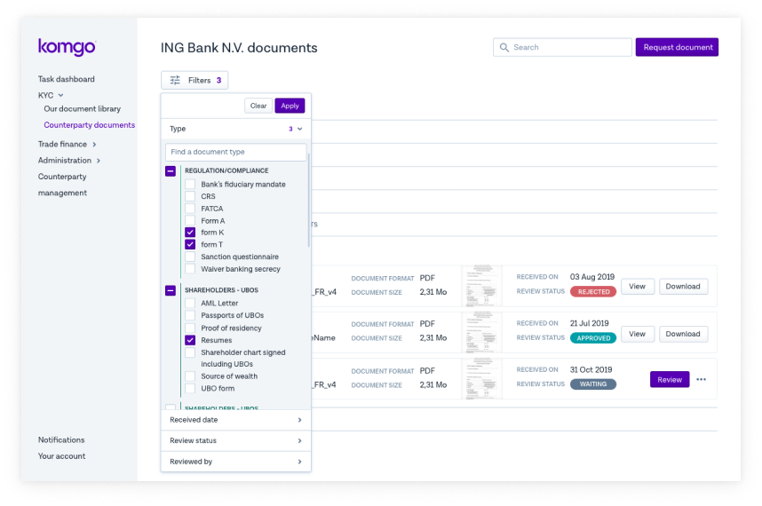
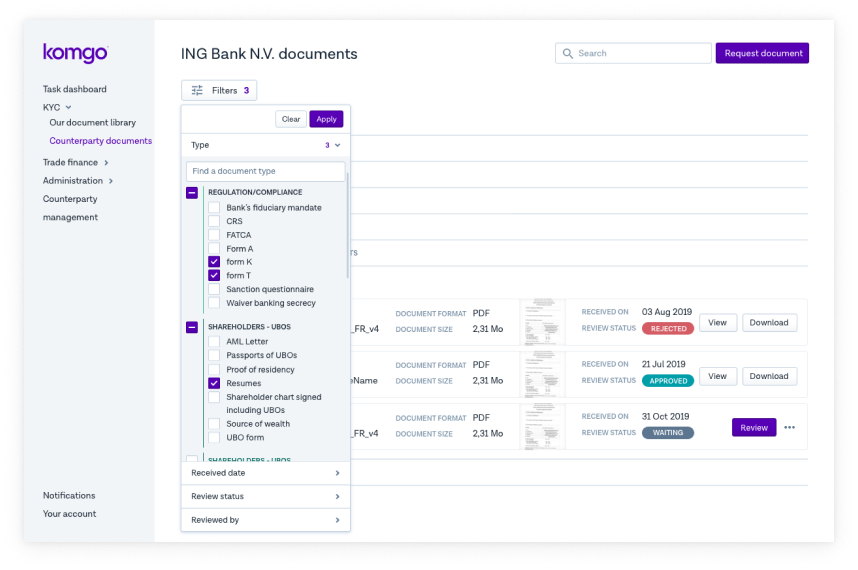

But first, we need to understand the bigger picture: how global trade finance works, and where Blockchain technology comes into it wisely:
Komgo intervenes only in the financial aspect of the global commodity import/export activity. The other parts, focused on the supply-chain are managed by another platform called Vakt. The two platforms work alongside each others, a bit like the eBay/Paypal relationship and have been launched in sync.
On top of the emptyness (and lack of empty states) of the platform, one of the most urgent improvement I made was upon the documents types and category distinction.
After a quick benchmarking of document management systems (among competitors within the same industry and more broadly) I drafted a lighter table to get rid of the generic accordion pattern used by default by developpers.
Users were aware of the kind of documents they were expecting and how to classify them, however they needed to find and manipulate them at a glance.